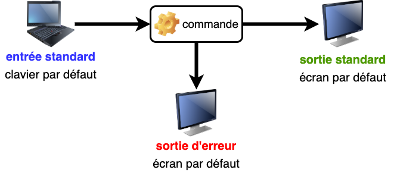
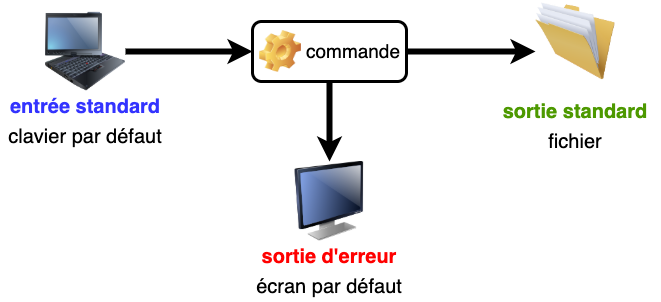
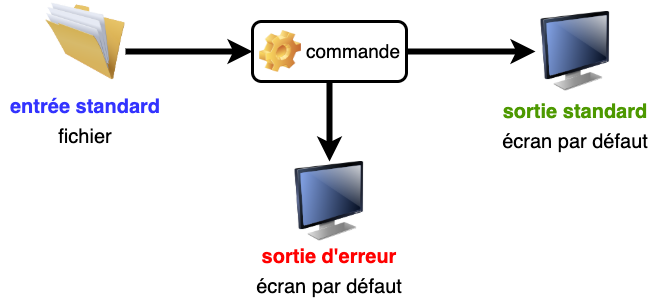
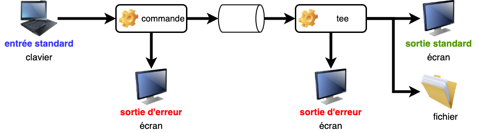

Systèmes d'exploitation
Manipulation des processus sous Unix
3A - Cursus Ingénieurs
CentraleSupelec
2023/2024

Systèmes d'exploitation
- Ensemble de programmes informatiques servant d’interface entre
le matériel et les applications utilisateurs.- ex. : Windows (XP, 7, ...,10), famille Unix (Linux, Mac-OS, ...).
- Linux domine dans le calcul intensif
- plus de 97 % des calculateurs du TOP 500 $\to$ Classement 2019
L'historique d'Unix
L'historique d'Unix

L'historique d'Unix
L'historique d'Unix

L'historique d'Unix
L'historique d'Unix
Caractéristiques du système Unix
- Multi-tâches (concurrentes et indépendantes)
- Multi-utilisateurs (dont l’administrateur ou le root)
- système d’identification et droits d’accès aux fichiers
- Chaînage des processus par les tubes (pipes)
- composition d’outils élémentaires pour des tâches complexes
- Shell est l’interface utilisateur du système d’exploitation.
bash: Bourne Again SHell (sh: shell historique de Bourne)
Caractéristiques du Shell
- Shell est l’interface utilisateur du système d’exploitation.
bash: Bourne Again SHell (sh: shell historique de Bourne)
- L’interpréteur de commandes (Shell) intègre un langage
de programmation (variables, structures de contrôle, fonctions ...)- programmes interprétés = fichiers de commandes = shell-scripts
- création de commandes par l’utilisateur
Le système de fichiers d'Unix
Découverte et manipulation à l'occasion du TP 1
Le flux standard
Commande Unix $\to$ trois flux standards de données :
La redirection
- Au lieu d’une saisie au clavier et d’un affichage à l’écran, stocker
de façon permanente les informations d’entrée ou de sortie.- rediriger les flux standards à partir ou vers des fichiers.
-
Combiner des commandes pour effectuer des traitements complexes
- rediriger les flux standards à partir ou vers d’autres commandes.
- Grande souplesse et puissance du système Unix.
Redirection vers un fichier

Un nouveau fichier est créé avec le contenu de la sortie
La sortie est ajoutée à la fin d'un fichier existant
Exemples
Le contenu du dossier courant dans un fichier
Les 10 premières puis les 10 dernières lignes
La liste des fichiers sources Java, puis celle des fichiers sources C
Redirection vers un fichier
Attention : le shell interprète très tôt les redirections
- ne pas rediriger la sortie vers le fichier d’entrée
Solution :
- utiliser un fichier tampon
Entrée depuis un fichier

Le fichier doit exister au préalable
Exemple
Lecture des données d’entrée d’un script depuis un fichier
La sortie d'erreurs vers un fichier

Un fichier est créé avec le contenu de la sortie d’erreurs
La sortie d’erreurs est ajoutée à la fin d'un fichier existant
Exemple
Sauvegarde des diagnostics d’une compilation
Regroupement des flux
fichier_existant et un message d'erreur
Quelques fichiers spéciaux
-
Le répertoire
devcontient des fichiers spéciaux gérant les flux entre l'UC et les périphériques (terminaux, imprimantes, disques, ...) -
/dev/tty: le terminal attaché à la connexion -
/dev/null: fichier poubelle (vide) ou trou noir !- Exemple : empêcher le flux d’erreur de s’afficher à l’écran.
Tubes ou pipes
Méthode séquentielle
Chaînage avec tube
Exemple i
Affichage paginé de la liste des fichiers du répertoire courant
-
Exemple utilisant la méthode séquentielle
-
Exemple utilisant le chaînage avec tube
Exemple ii
Affichage de la 12e ligne du fichier
toto.txt -
Exemple utilisant la méthode séquentielle
-
Exemple utilisant le chaînage avec tube
Cas de plusieurs redirections
Avec une seule commande, l’ordre des redirections est indifférent
Avec deux commandes et un tube, ne pas détourner le flux
Duplication de flux
La commande

tee duplique le flux de son entrée standard vers le fichier passé
en argument et la sortie standard.
Exemple
Expressions régulières
ou rationnelles
Les caractères spéciaux
. |
représente un caractère quelconque et un seul |
\ |
sert à protéger le caractère qui le suit pour empêcher qu’il ne soit interprété |
* |
représente un nombre d’occurrences quelconque (zéro ou plus) du caractère ou de la sous-expression qui précède |
Remarque
ne pas les confondre avec les wildcards (
les noms de fichiers, qui sont interprétés par le shell.
ne pas les confondre avec les wildcards (
* et ?), utilisés pour les noms de fichiers, qui sont interprétés par le shell.
Exemples
a* |
un nombre quelconque de fois le caractère a y compris une chaîne vide |
aa* |
un ou plusieurs fois le caractère a |
.* |
un nombre quelconque de caractères quelconques y compris une chaîne vide |
..* |
au moins un caractère |
\..* |
un point suivi d’un caractère quelconque |
\\* |
un nombre quelconque (y compris zéro) de backslash |
Les ancres
^ |
en début de motif, représente le début de ligne |
$ |
en fin de motif, représente la fin de ligne |
Exemples
^a |
une ligne commençant par un a |
^a.*b |
une ligne commençant par un mot commençant par un a et finissant par b |
^$ |
une ligne vide |
^.*$ |
une ligne quelconque, y compris vide |
^..*$ |
une ligne non vide |
Ensemble de caractères
- Un et un seul caractère choisi parmi un ensemble de caractères spécifiés
entre crochets :
[ensemble_de_caracteres] -
À l’intérieur d’un tel ensemble, les caractères spéciaux sont :
[-]: utilisé pour définir des intervalles
[^]: en tête pour spécifier le complémentaire de l’ensemble
[]]: délimite la fin de l’ensemble, sauf s’il est placé au début -
On peut faire référence à des classes de caractères
[:lower:],[:upper:],[:alpha:],[:digit:],[:alnum:]
Exemples
[a0+] |
un des caractères a, 0
ou + |
[a-z] |
une lettre minuscule |
[a-z:;?!] |
une lettre minuscule ou une ponctuation double |
[0-9] |
un chiffre |
[^0-9] |
n’importe quel caractère qui n’est pas un chiffre |
[]-] |
un ] ou un signe - |
[[:digit:]] |
au lieu de [0-9] |
[-+.[:digit:]] |
un chiffre, un ., un + ou - |
Le filtre grep
grep: global regular expression print- affiche les lignes qui contiennent un motif passé en paramètre
oùmotifest une expression régulière -
Principales options :
-i: ignore la casse (majuscule/minuscule)-v: inverse la sélection (affiche les lignes sans le motif)-l: la liste des fichiers contenant le motif-n: les lignes contenant le motif précédées de leur numéro-c: les noms des fichiers et le nombre de lignes qui contiennent le motif
Exemples
affiche la ligne de l'utilisateur
lefrere dans le fichier de mots de passe
affiche les lignes commençant par
// (commentaires)
affiche les lignes dont le premier caractère non blanc est
{
affiche les lignes qui ne sont pas des commentaires
Exemples
affiche les lignes qui ne comportent pas que des blancs
affiche la liste des sous-répertoires du répertoire courant
Généralités
- Processus $\to$ tâche élémentaire identifiée par un numéro unique
(pid- process identifier) -
psafficher les processus de l’utilisateur associés au terminal -
Principales options :
-e: affiche tous les processus de tous les utilisateurs-U user_list: sélectionne les processus appartenant à cette liste-f: affiche une liste complète d’informations sur chaque processus
Généralités
| UID | PID | PPID | TTY | VSZ | CMD |
|---|---|---|---|---|---|
| user id | processus id | parent id | terminal | taille | commande |
Contrôle et signaux
Ctrl L |
clear | efface l’écran |
Ctrl S |
stop | blocage de l’affichage à l’écran |
Ctrl Q |
start | déblocage de l’affichage à l’écran |
Ctrl D |
eof | fermeture du flux d’entrée (fin de session en shell) |
Ctrl C |
int | interruption du processus |
Ctrl Z |
susp | suspension du processus en cours |
Contrôle et signaux
- La commande
sttygère l’affectation des caractères de contrôle
à certaines fonctions -
Un caractère de contrôle ne peut agir que sur le processus
en interaction avec le terminal auquel il est attaché.
La commande kill
- Intervenir sur un autre processus (ex. application qui ne répond plus)
- le désigner par son numéro et lui envoyer un signal
-
killenvoie par défaut un signal de terminaison -
sinon un signal de mise à mort
Processus en arrière plan
jobs |
affiche la liste des processus en arrière-plan |
fg |
passe le job courant en premier plan |
fg num |
passe le job num en premier plan |
bg |
passe le job courant en arrière-plan |
Exemples
-
topau premier plan (on perd la main dans la fenêtre initiale)-
terminer ce processus par
ctrl C
-
terminer ce processus par
-
topen arrière plan (on conserve la main dans la fenêtre initiale)- terminer le processus
topparfgpuisctrl C - ou par
kill -s KILL pid
- terminer le processus
Remarque :
si on a oublié le
le processus, puis
&, on utilise ctrl Z pour suspendre le processus, puis
bg pour le passer en arrière-plan
Code de retour
Combinaison de commandes
- La première commande est exécutée.
- Si elle réussit (
$? = 0), la seconde commande est exécutée.
Exemple
Ce qu'il faut retenir
- Unix est un OS multi-tâches, multi-utilisateurs
- Unix est à la base de plusieurs OS modernes
- Le shell bash est une interface utilisateur basée
sur un interpréteur de commandes - Une grande souplesse et une puissance basées
sur la redirection et le Pipe - Mécanisme de recherche basé sur les expressions régulières
- Commandes de gestion et de synchronisation des processus